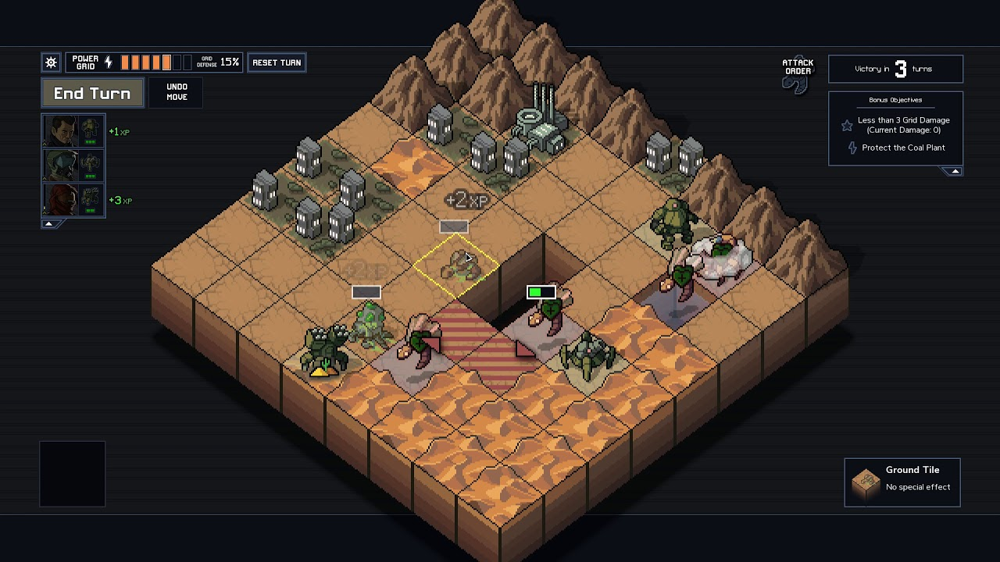
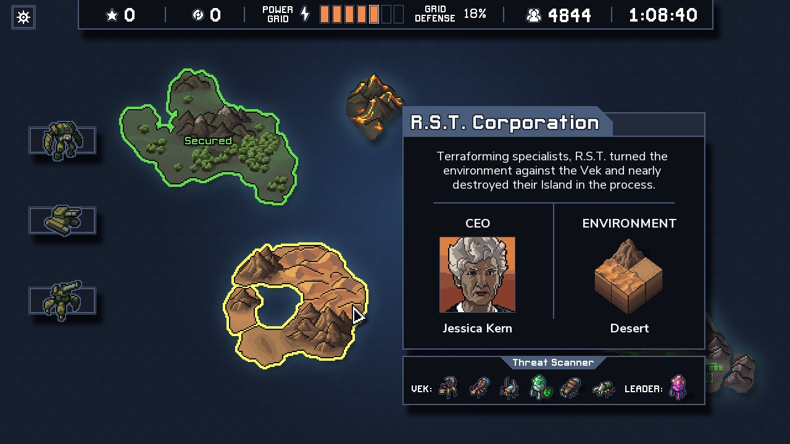

Into the Breach
Joel Haddock Apr 8, 2024
Everybody loves giant robots. And everybody loves giant robots squashing giant bugs. So right from the start, Into the Breach has a lot going for it.
In Breach, the remnants of humanity (after some non-specificed disaster) have been reduced to just four islands out in the middle of a lonely ocean.
As if that weren't bad enough, now hideous bug creatures called Vek are emerging from beneath the earth and threatening to wipe out everything that remains.
Fortunately for them, the player is here to take charge of a team of timeline-hopping pilots and their mechs to save mankind at any cost.
Battles in Breach play out as a series of turn-based struggles to survive. Maps are small affairs, littered with mountains and seas, as well as the all important buildings housing the island's citizens. It's these buildings that make the difference between victory and defeat. Let the Vek destroy too many and the entire power grid collapses, allowing the islands to be completely overrun. When that happens, it's time to jump to a new timeline and try again.
Make good choices!
In a twist that makes Breach almost more of a puzzle game than a tactics game, the player always has full information on what's going to happen on the next turn. The player can always see where Vek will emerge, where they will move, and what they are targeting.
Armed with this knowledge, the player must maximize the actions of their team to minimize the damage done. I say "minimize" because a lot of Breach is accepting you can't get through every turn unscathed.
During each run, the player is rewarded with opportuities to pick up new equipment and pilots, expanding the abilities of their mechs. Achieve enough special conditions during a run and you'll also unlock entire new teams for subsequent runs.
How did things get like this? Nobody knows!
The story of Breach, on its surface, is a bit sparse. But play though enough runs with enough different pilots and you'll start to stitch together a tantalizing series of events told my (often unreliable) narrators.
All in all, Breach is an elegantly simple game that will push your brain into high gear as you play through all the possibilities each turn can bring. And if it all goes wrong, well, you only have yourself to blame.
That's why Into the Breach is the best roguelite.
So What Is This?
Welcome to the Roguelite House, the place for all things roguelite.
If you don't know what a roguelite is, you should probably start here.
What're We Running Now?
- Against the Storm
- Balatro
Latest Posts
-
What Is A Roguelite?
Maybe you should start here.
-
What Is A Roguelite?
Maybe you should start here.
-
Hades
Hades is the best Roguelite
-
Slay the Spire
Slay the Spire is the best Roguelite